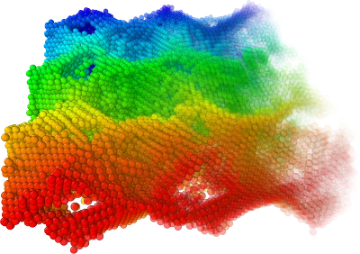

Semi-transparent particles
{kind=link}
Particles can be made semi-transparent by setting their Transparency particle property.
A value of 0.0 lets a particle appear fully opaque (the default), while values in the range 0.0 – 1.0 render a particle translucent.
The easiest way to set the Transparency property to some value is by inserting the Compute property modifier into the data pipeline.
Simply enter the desired transparency value into the expression field and the Compute property
modifier will assign that value to all particles.
Setting the transparency selectively
You may want to make only a subset of the particles semi-transparent. To do this, first select the particles to be made semi-transparent,
then apply the Compute property modifier. Activate its Compute only for selected particles option to restrict the assignment of the
new Transparency value only to the currently selected particles. Unselected particles will keep their transparency values (0.0 by default).
In the example picture on this page, the Compute property
modifier was used to set the Transparency property based on a simple math formula: ReducedPosition.X.
Thus, instead of assigning a uniform transparency value to all particles, each particle’s value depends on its local X coordinate.